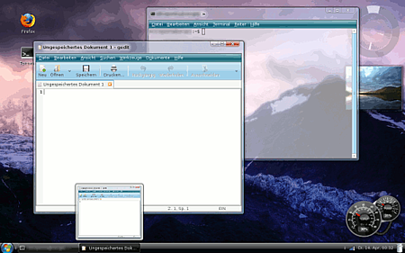

Vista-Theme
Archivierte Anleitung
Dieser Artikel wurde archiviert, da er - oder Teile daraus - nur noch unter einer älteren Ubuntu-Version nutzbar ist. Diese Anleitung wird vom Wiki-Team weder auf Richtigkeit überprüft noch anderweitig gepflegt. Zusätzlich wurde der Artikel für weitere Änderungen gesperrt.
Anmerkung: keine unterstützte Umgebung mehr
Zum Verständnis dieses Artikels sind folgende Seiten hilfreich:
In diesem Artikel wird erklärt, wie man seinen Desktop so anpasst, dass er jenem von Windows Vista ähnlich sieht. Die folgende Anleitung ist nur für GNOME 2 gültig und getestet. Zudem sind aktivierte Desktopeffekte (Compiz) vonnöten.
Vorschau¶
Eine Vorstellung davon, was mit dieser Anleitung erreicht werden kann, bietet folgender Screenshot:

Fensterrahmen¶
Um die von Vista bekannten Fensterrahmen mit diffusem Glaseffekt darzustellen, wird zunächst Emerald benötigt [1]:
emerald (universe)
 mit apturl
mit apturl
Paketliste zum Kopieren:
sudo apt-get install emerald
sudo aptitude install emerald
Um die Fensterrahmen wie unter Vista erscheinen zu lassen, ist es nötig, das Emerald-Design VistaQ  zu installieren. Dazu muss die Datei Vista-Q.emerald heruntergeladen werden.
zu installieren. Dazu muss die Datei Vista-Q.emerald heruntergeladen werden.
Das Theme wird über den Emerald Motiv Manager installiert. Dieser kann nun aus dem Menü gestartet werden unter
"System -> Einstellungen -> Emerald Motiv Manager"
Dort kann das im vorigen Schritt heruntergeladene Design über den Button "Import" installiert und dann über die Auswahlliste aktiviert werden. Der Reiter "Designs bearbeiten" beinhaltet unzählige Parameter für den Fensterrahmen, deren genaue Erklärung den Rahmen dieser Anleitung sprengen würde. Für die folgenden Schritte ist es von Bedeutung, die Option "Rahmen-Verwisch-Effekt" im Reiter "Emerald Einstellungen" auf "Kompletter Fensterrahmen" zu stellen. Dies ist nötig, da sonst später das verwischende Erscheinungsbild der Fensterrahmen nicht beobachtet werden kann.
Fensterinhalt¶
Um auch den Fensterinhalt an das Aussehen von Vista anzupassen, sollte das GTK-Design geändert sowie die Symbole angepasst werden.
GTK-Design¶
Es wird das Design Aero-Clone verwendet. Das Design basiert auf der GTK-Engine "Murrine", die sich aus den Paketquellen installieren lässt. Folgendes Paket muss installiert [1] werden:
gtk2-engines-murrine (universe)
mit apturl
Paketliste zum Kopieren:
sudo apt-get install gtk2-engines-murrine
sudo aptitude install gtk2-engines-murrine
Nun wird das heruntergeladene Archiv entpackt [3]. Es wird lediglich die Datei aero-clone.tar.gz benötigt, da diese das GTK-Design darstellt. Danach kann das Design wie gewohnt installiert [4] und verwendet werden.
Hinweis:
Das Standard-Menü von Ubuntu sieht mit dem verwendeten GTK-Design nicht besonders schön aus. Daher wird später im Schritt "GNOME-Panel" das Menü verändert.
Symbole¶
Hier bietet sich das Symbolthema Vista original an. Auch das Symbolthema nuoveXT 2 ähnelt jenem von Windows Vista.
GNOME-Panel¶
Um die Vista-Taskleiste nachzubilden, wird zunächst das obere der beiden Panel entfernt. Im nun verbliebenen unteren Panel sollten sich von links nach rechts folgende Objekte befinden:
Hauptmenü (nicht Menüleiste!)
Fensterliste
Benachrichtigungsfeld
Uhr
Mülleimer
Zusätzlich können zwischen Hauptmenü und Fensterliste noch (z.B. per Drag-and-Drop) Starter erstellt werden, um eine Art "Schnellstartleiste" zu erhalten. Die Breite des unteren Panels sollte auf 32px erhöht werden.
Startmenü-Symbol¶
Um das Ubuntu-Symbol durch ein beliebiges anderes zu ersetzen, muss das verwendete Symbol-Thema verändert werden. Dazu wird die Grafik aus dem Symbolthema nuoveXT 2
~/.icons/nuoveXT.2.2/24x24/places/start-here.png
durch ein gleichnamiges eigenes Icon ersetzt.
Hinweis:
In dem unter Fensterinhalt heruntergeladenen "Aero-Clone"-Archiv befindet sich ein entsprechendes Vista-Symbol. Da die Glaskugel jedoch ein Markenzeichen von Microsoft ist, bleibt dessen rechtlicher Status zweifelhaft.
Desktopeffekte¶
Um die Desktopeffekte mit Compiz zu konfigurieren, wird der CompizConfig Einstellungs-Manager verwendet. Folgende Effekte müssen per Hand aktiviert oder konfiguriert werden:
Verwischende Fensterrahmen¶
Hierzu wird das Plug-in "Blur" aktiviert. Wichtig hierbei ist, dass der Punkt "Alpha Blur" ausgewählt ist und unter "Alpha Blur Windows" "any" steht. Um das Ausmaß des Verwischens manuell anpassen zu können, ist es nötig, unter "Blur Filter" "Gaussian Blur" einzustellen.
Hinweis:
Die Option "Alpha Blur" lässt nicht nur die Fensterrahmen verwischt erscheinen, sondern wirkt auf alle Fensterteile, die teilweise durchsichtig sind. In obigem Screenshot ist beispielsweise ein Terminal mit transparentem Hintergrund dargestellt.
Reflektionen auf den Fensterrahmen¶
Unter Vista sind dezente Reflektionen auf den Fensterrahmen zu erkennen. Diese Funktion ist prinzipiell auch in Compiz enthalten, jedoch bisher mit einem Fehler behaftet. Nicht nur die Fensterrahmen, sondern auch deren Schatten reflektieren, was dazu führt, dass besonders auf dunklem Hintergrund die Schatten unschön aussehen. Die Alternativen sind entweder, Schatten oder die Reflektionen zu deaktivieren. Sollen die Reflektionen dennoch verwendet werden, so ist zunächst eine entsprechende Reflektionsgrafik herunterzuladen. Beispiele dafür finden sich etwa auf compiz-themes.org oder auch im Compiz Reflection Pack .
Das Plug-in "Reflektionen" wird aktiviert und unter "Reflektionsbild" eine beliebige Reflektionsgrafik ausgewählt.
Sonstige¶
Weitere Effekte, die aktiviert oder je nach Geschmack modifiziert werden können, sind
"Expo"
"Fenster-Vorschaubilder"
"Scale"
"Shift Switcher"
Zudem kann über das Plugin "Animationen" das Ein- und Ausblendeverhalten von Objekten detailliert eingestellt werden.
Schriften¶
Unter Windows Vista wird die Schrift "SegoeUI" verwendet, die jedoch unter einer proprietären Lizenz steht. Als freie Alternative sei hier die Schriftart "Bitstream Vera Sans" (in der Standardinstallation enthalten) empfohlen, die ein ähnliches Schriftbild aufweist. Zunächst wird die Schrift im Fensterrahmen angepasst. Dies geschieht über den Emerald Motiv Manager im Unterpunkt
"Designs bearbeiten -> Titelleiste -> Titel Schrift"
Hier wird die Schrift "Bitstream Vera Sans Bold" in Schriftgröße 10pt ausgewählt. Die Schrift im Fensterinhalt wird über das Menü unter
"System -> Einstellungen -> Erscheinungsbild -> Schriftarten"
ausgewählt. Hier wird für die ersten drei Einträge jeweils "Bitstream Vera Sans Roman" ebenfalls in Schriftgröße 10pt gewählt.
Letzte Anpassungen¶
Um zum "perfekten" Aussehen zu gelangen, sind noch viele kleine Anpassungen vonnöten. Zwei seien hier erwähnt:
Desklets¶
Unter Windows Vista können der sog. "Sidebar" verschiedene kleine Programme hinzugefügt werden. Unter Ubuntu wird dies durch Desklets erreicht. Empfehlenswert sind insbesondere die Screenlets.
Hintergrundbild¶
Den letzten Schliff kann man seinem System mit einem passenden Bildschirm-Hintergrund verpassen. Eine Bildersuche mit den Schlagwörtern "Vista" und "Wallpaper" sollte genügend Kandidaten finden.
Links¶
gnome-look.org
- Riesige Auswahl an Designs, Symbolen etc. für GNOME (und Xfce)Make Ubuntu look like Vista
- Gnomestyles-Blogeintrag
- Erstellt mit Inyoka
-
 2004 – 2017 ubuntuusers.de • Einige Rechte vorbehalten
2004 – 2017 ubuntuusers.de • Einige Rechte vorbehalten
Lizenz • Kontakt • Datenschutz • Impressum • Serverstatus -
Serverhousing gespendet von